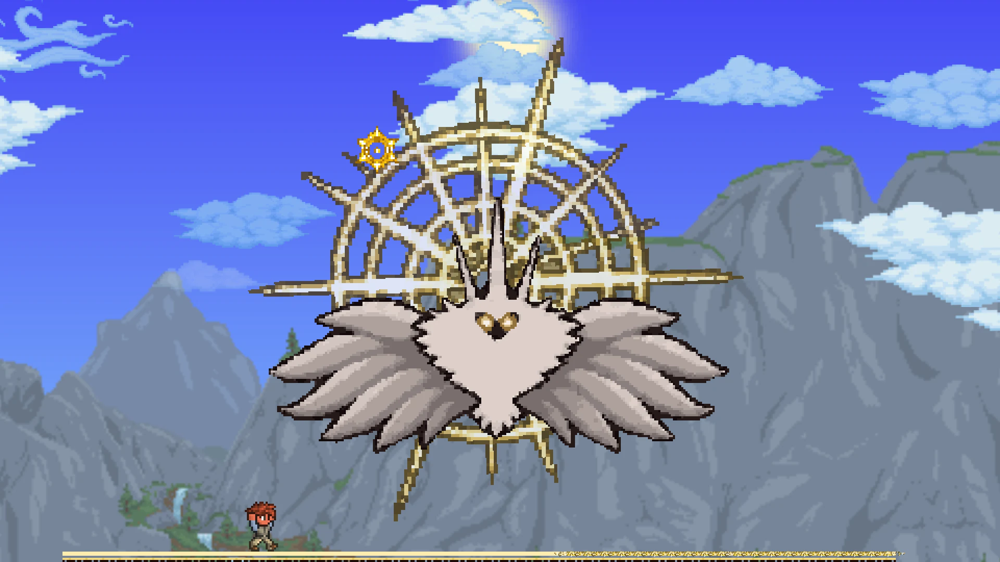
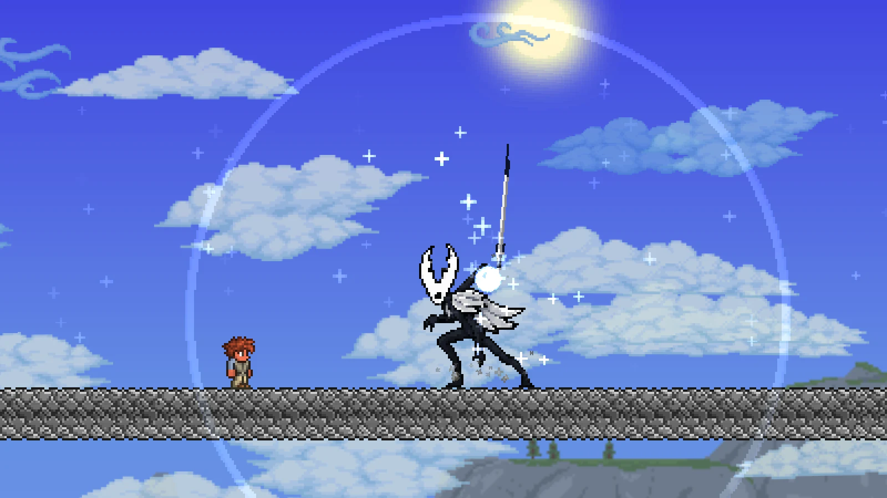
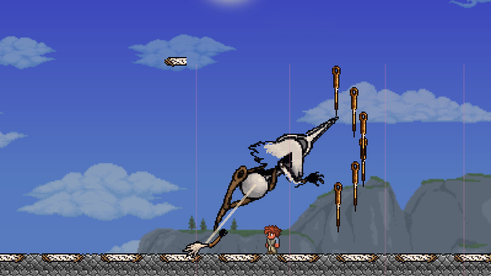
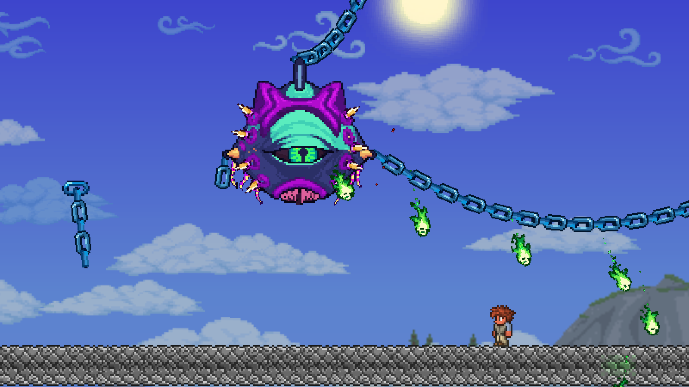
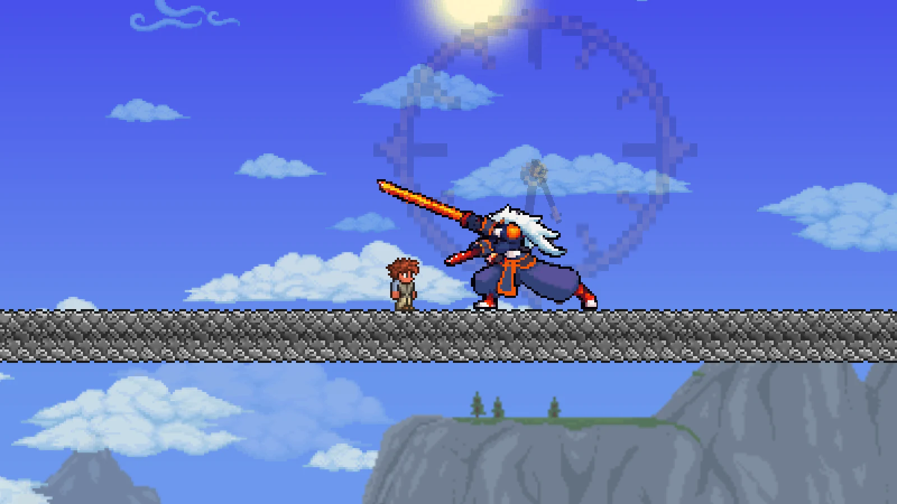
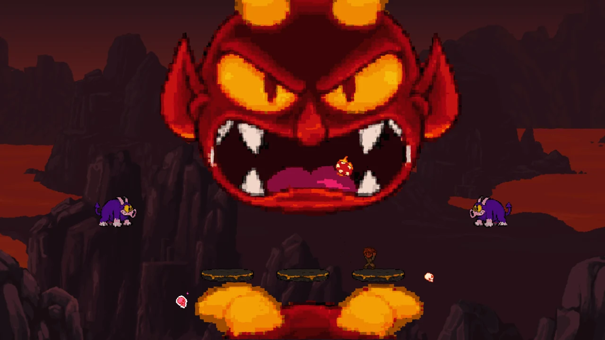
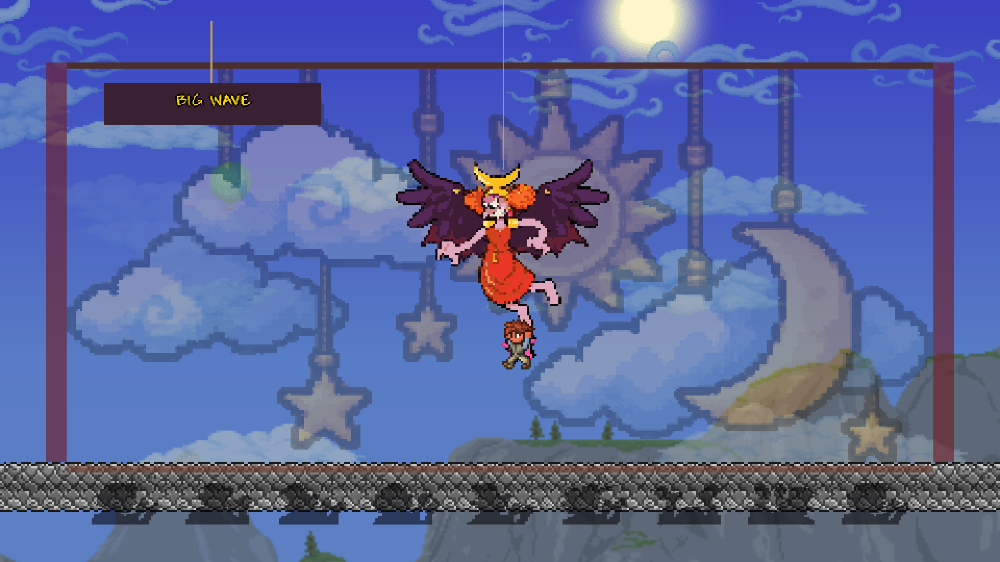
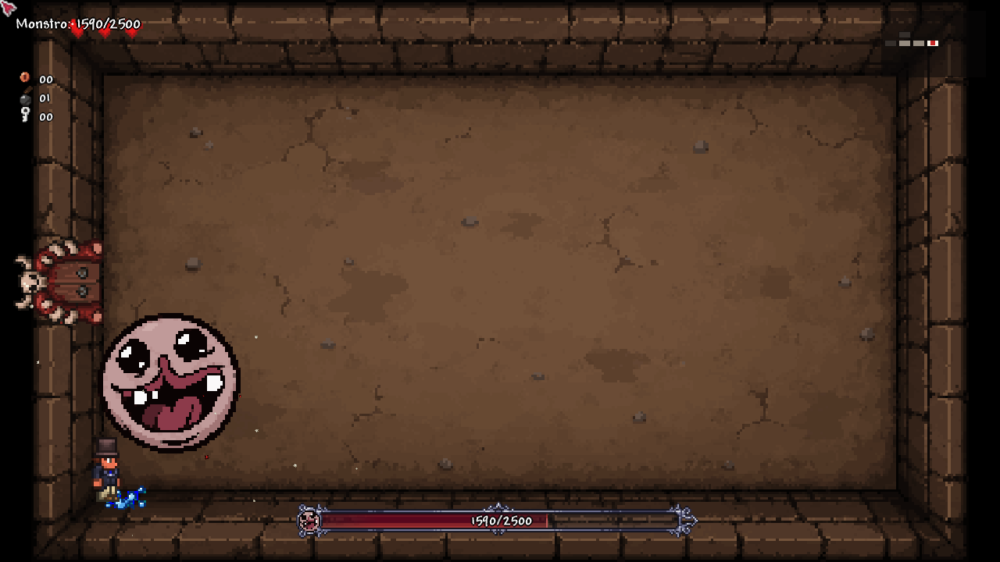

02 · Terraria mod · In development
Otherworlds
A crossover mod that brings bosses and gear from five other games into Terraria: Hollow Knight, Hollow Knight: Silksong, Dead Cells, Cuphead and The Binding of Isaac. Each game is a pack that stands on its own and slots into Terraria’s own progression. The mod is still in development.
- Role
- Lead developer with AI tools
- Status
- In development since October 2026; not yet released
- Platform
- Terraria via tModLoader 1.4.4, .NET 8; single player and multiplayer
- Built with
- C#, Python tooling; Claude Code, OpenAI Codex and AI image generation

What it is
Otherworlds brings bosses, weapons and abilities from five 2D action games into Terraria, each as a pack that is complete on its own terms and wired into Terraria’s classes, progression and crafting: the weapons belong to Terraria’s melee, ranged, magic and summoner classes, grow stronger as the world does, and are made from Terraria’s ores and boss drops as well as the pack’s own materials.
Every boss gets the full Terraria treatment: a summoning item, a boss bar, changes in Expert and Master Mode, a treasure bag, and a trophy, mask and relic. The mod is in English and Simplified Chinese and is tested in multiplayer as well as single player.
The five packs
Hollow Knight
The nail’s short, quick strikes, Soul that heals, spells, and charms with real trade-offs. Thirteen bosses: the False Knight, Hornet (as Protector and as Sentinel), the Mantis Lords, the Broken Vessel, the Soul Master and Soul Tyrant, the Dung Defender, the Watcher Knights, the Traitor Lord, the Nightmare King Grimm, the Pure Vessel and the Absolute Radiance.


Hollow Knight: Silksong
Seven bosses so far: the Bell Beast, Lace, Nyleth, Trobbio, the First Sinner, Grand Mother Silk and the Bell Eater, with Silksong’s crests, tools and abilities.

Dead Cells
Seven bosses: Mama Tick, Conjunctivius, the Concierge, the Time Keeper, the Giant, the Hand of the King and the Queen, with weapons and skills in Dead Cells’ spirit.


Cuphead
Finger-gun shots, a dash, and the parry of anything pink. Nine bosses: the Root Pack, Goopy Le Grande, Cagney Carnation, Baroness Von Bon Bon, Captain Brineybeard, Grim Matchstick, Sally Stageplay, King Dice and the Devil.


The Binding of Isaac
A trapdoor opens onto an otherworld of its own: a top-down basement in Isaac’s style, made fresh for every run, with lit rooms, black between them and no gravity. Whatever happens to the player down there is undone on the way out. Monstro and the Duke of Flies wait below, and beating them earns keepsakes that work up in Terraria.

Fights true to the originals
Each boss starts as a written move list of the original: the wind-up, strike and recovery of every attack, how it picks its next move, its staggers and phase changes, and how a player dodges and when they can hit back. The moves then come into Terraria one at a time, so each fight plays like the original while working in Terraria’s worlds, with Terraria’s movement and items.
No boss is a single still image. Idle, movement, the wind-up, strike and recovery of each attack, staggers, phase changes and death all have frames of their own, and weapons, silk and shockwaves are separate sprites that the code draws and turns, so the motion can stay smooth.
Testing at scale
Thirty-eight bosses break in ways no one would catch by playing alone, so much of the work goes into testing:
- Boss simulations. On a headless tModLoader server, a stand-in player fights each boss in a cleared sky arena in Normal, Expert and Master Mode, with fixed random seeds so any fight can be replayed exactly. The simulation checks that the boss keeps after the player, never freezes, uses every move, dies on time and drops its loot.
- Real terrain. The same fights run in generated worlds, from deserts, jungles and caverns to the dungeon, the underworld and sky islands: 207 cases per seed for 33 bosses so far, to catch a boss that gets stuck in blocks, loses the player or gives up.
- Pictures from the real game. Scripted scenes in the game client photograph each fight, hundreds of frames at a time, so every change to a boss is seen as a player would see it, and a motion recorder flags animation that jumps or stutters.
- Self-checks. In every test run the mod checks itself, 4,337 checks in all: every item, NPC, projectile, tile and wall has its sprite, every boss has its treasure bag, trophy, mask and relic and can’t burn in lava, saved progress loads back, and each boss’s own rules hold. A separate script checks that every line exists in both languages.
- A merge gate. Work happens in parallel branches, and a change reaches the main line only after the build, the self-checks and the simulations pass; the longer test runs also go through on a Windows PC.
How it is made
Xinyue (Lily) Feng is leading the mod’s development with AI tools, credited openly. The C# is written by AI coding agents, Claude Code and OpenAI’s Codex, working in parallel branches under her direction, and the sprites are generated with AI image tools, then fitted to Terraria’s pixel style by the project’s own scripts.
The mod contains nothing from the original games. The bosses’ looks and moves follow the originals closely and were studied from them, but every sprite is newly drawn and never traced, the few sound cues are synthesized, and the bosses fight to Terraria’s own music. Before a first release, several bosses are being redrawn to match the originals more closely, and the terrain tests are being extended to every boss.
An unofficial, non-commercial fan project, to be released free. Hollow Knight and Hollow Knight: Silksong (Team Cherry), Dead Cells (Motion Twin), Cuphead (StudioMDHR), The Binding of Isaac (Edmund McMillen) and Terraria (Re-Logic) belong to their creators. The mod is not affiliated with or endorsed by any of them and contains none of their game files.